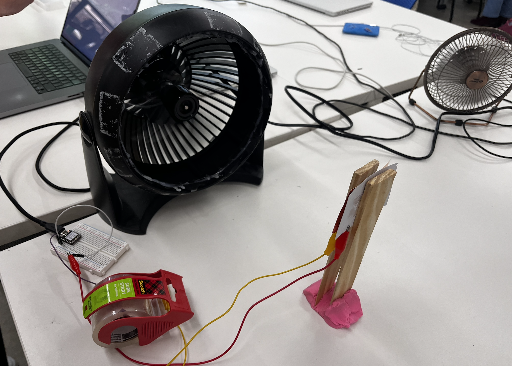
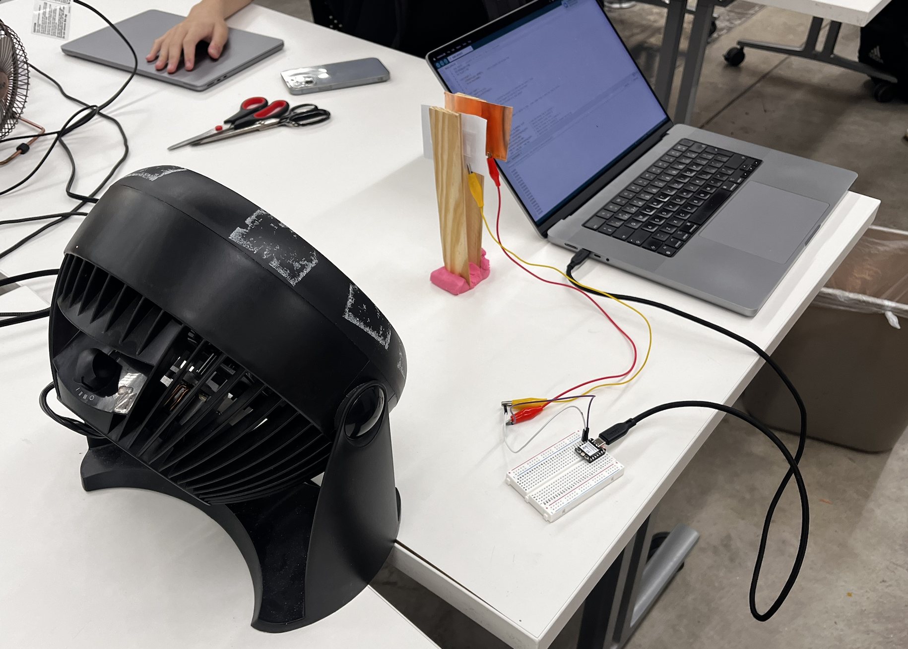

For week 6, we reviewed circuits setups with different resistors and we also were introduced to many types of sensors. The one we focused on was capacitive sensors between 2 parallel copper pieces on how its sensitivity is measured with permittivity. Each table group was assigned a sensor type and we had to create one. Our group was assigned wind velocity.


Our designed our wind sensor inspired by Nathan's idea on how we should set it up. We used clay to hold two popsicle sticks together acting as a hinge and with a small copper piece attached to each stick. These two copper plates make up our capacitor. When wind blow form the fan, the sticks move and change the distance between the plates which alters the capacitance and changes the value of the output. We set the fan to differnet speeds and got relatively consistent results for the output where we plot on a graph. Each speed made the popsicle change its distance from the other.